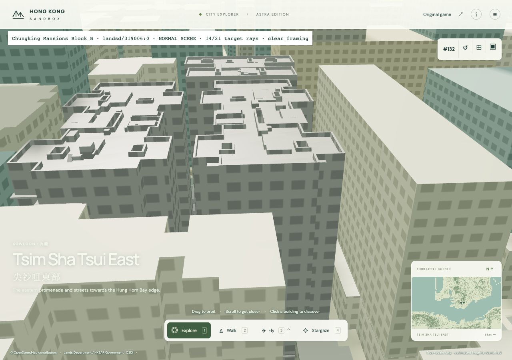
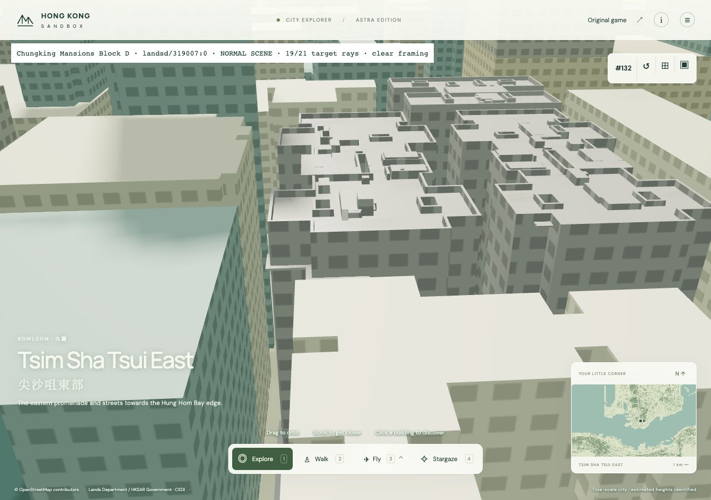
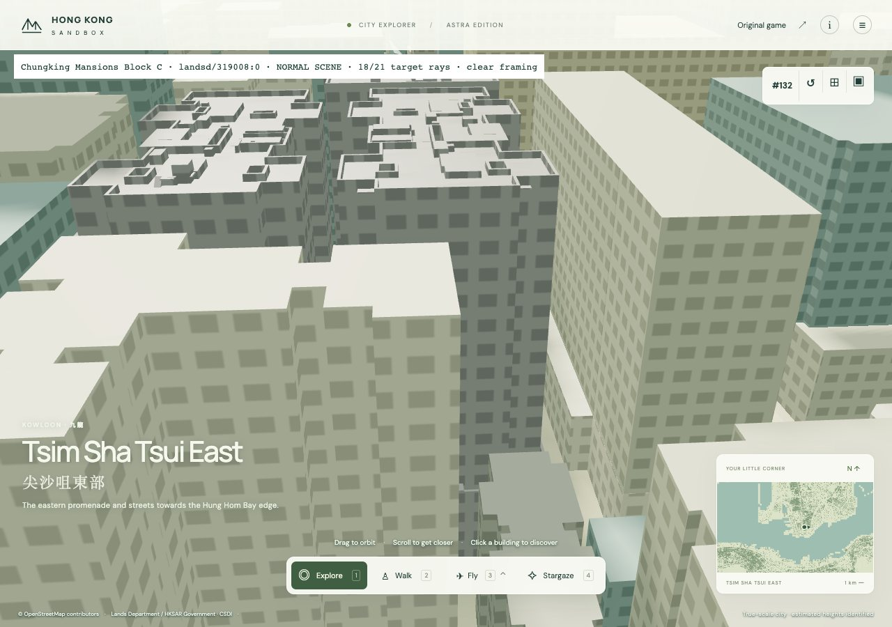
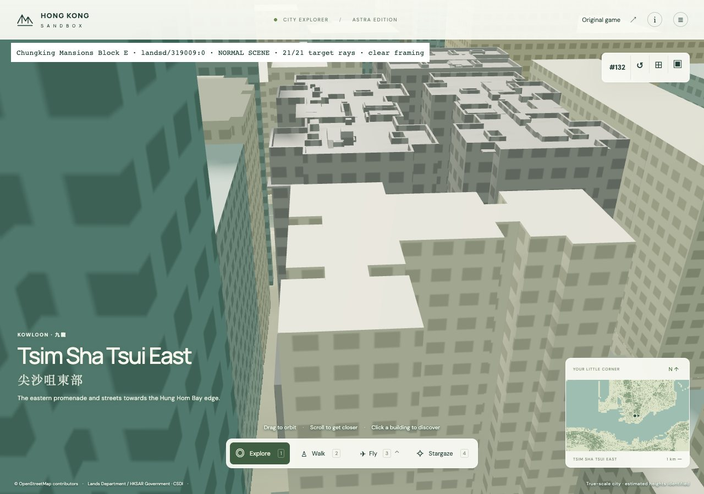
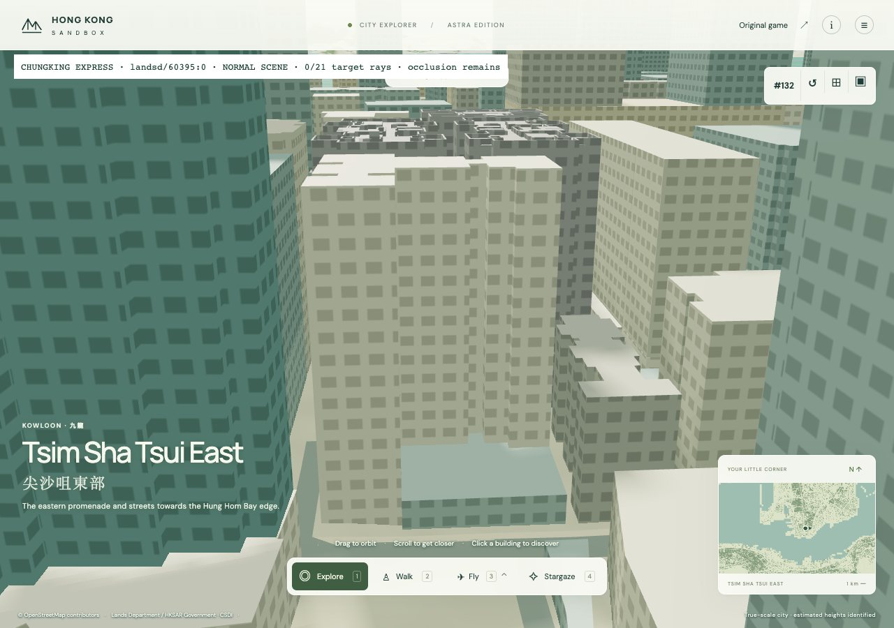

scene · native camera clear · 14/21 source rays

scene · native camera clear · 19/21 source rays

scene · native camera clear · 18/21 source rays

scene · native camera clear · 21/21 source rays

scene · framing / native activation held · 0/21 source rays